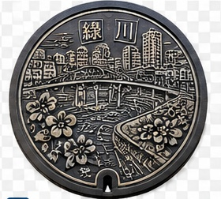
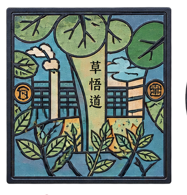
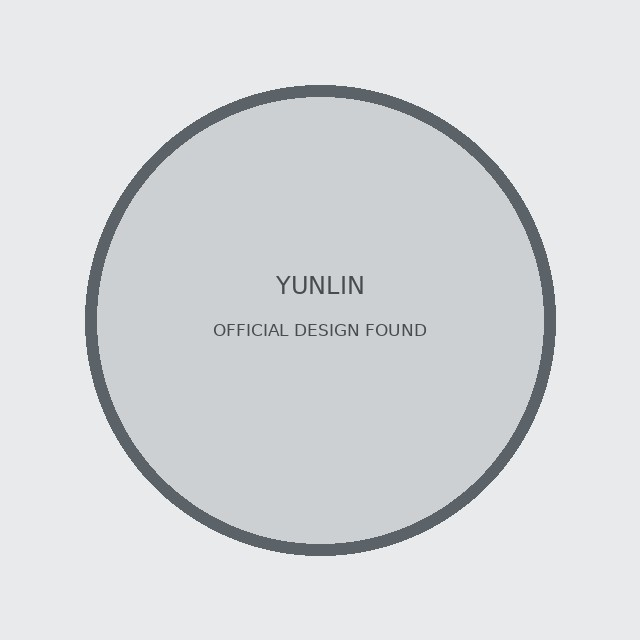
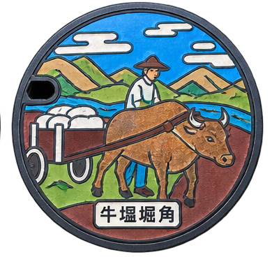
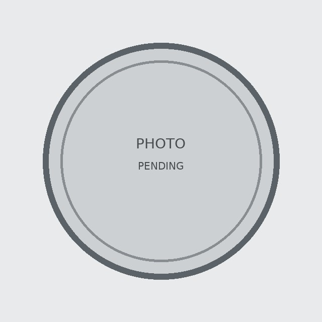
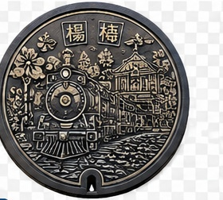
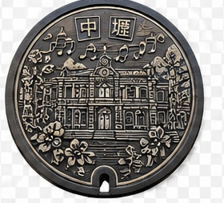

📍 臺北市 中山區
快樂。中山
以圓山大飯店、美麗華摩天輪與林森條通居酒屋生活為元素，呈現工作後休閒的中山區。
V2.0 新增官方範圍圖、來源面板、可信度標示與區域導航。精確 GPS 未逐點驗證前，仍不會用猜測座標冒充實際孔蓋位置。
以圓山大飯店、美麗華摩天輪與林森條通居酒屋生活為元素，呈現工作後休閒的中山區。

以行天宮及關聖帝君為代表，並以中山區區樹楓香點綴，傳達祈福與平安。

融入北門、中正紀念堂、臺灣特有種鳳蝶、木棉花與野百合等中正區代表元素。

以自由廣場、北一女與建國中學學生及書本，呈現中正區的人文、知識、民主與古蹟。

以四獸山化為四獸形象，搭配信義區吉祥物大冠鷲及區花野牡丹，表現都市與生態共榮。

以臺北101與跨年煙火為主角，融入國父紀念館、世貿中心、市政府與空廊等信義天際線。

以內湖科技園區與國內外企業為意象，將城市建築化為迎接世界與人才起飛的基地。

以大湖公園草地野餐與家庭休閒為主題，呈現自由自在的都市綠地生活。

北投溫泉博物館前身為北投公共浴場；設計融合北投泡湯文化與北投獅民俗技藝，呈現北投百年風華。

以北投納涼季為主題，描繪搭乘火車穿越時光、煙火、表演與夏夜休閒文化。

以人與城市共創共生為構想，呈現工廠、辦公大樓與研究院等南港產業及研究環境。

以東區門戶未來城市為主題，融入臺北流行音樂中心、中研院、南港展覽二館與交通轉運樞紐。

以陽明山野櫻花與賞櫻遊程為主要意象，呈現士林自然地景與季節幸福感。

外雙溪自然生態中的大白鷺沿河飛行，並串聯天文館、科學館與兒童新樂園。

以屈臣氏大藥局與霞海城隍廟為主體，融入筊杯、煙火、布、香火及中藥等大稻埕元素。

以積水倒影與仰視角度並陳北門和臺北郵局，呈現城西歷史建築與現代活力。

以四所大學、清真寺、天主堂、花市、大安森林公園與區花波斯菊呈現大安文教特色。

以大安森林公園為核心，將森林、生態、天氣與重要建築融入流動構圖，呈現都市樂活。

以木柵動物園代表動物為主角，包含臺灣黑熊、石虎等臺灣動物。

融入包種茶文化、貓空纜車、景美水文生態與茶農，呈現文山山城與茶文化。

以松山夜間生活為主題，融入香火、小巨蛋、煙火、星空、音樂與蟲鳴，並置入 Peace 摩斯密碼。

以松山日間生活為主題，融入飛機、河畔、民生社區綠色隧道、臺灣藍鵲、朱槿與摩斯密碼。

以日巡與夜巡分格畫面，融入燈籠、鞭炮、旗幟、陣頭、舞龍舞獅及廟宇，呈現廟會文化。

以四個代表性建築凝聚文化元素，從不同角度呈現老艋舺多元的城市風景。

桃園市水務局說明：大溪系統將老街元素置入人孔蓋設計。
桃園市水務局特色污水孔蓋；將百吉隧道納入圖騰設計。

桃園市水務局說明：小烏來系統融合新溪口吊橋及原民圖騰。

桃園市水務局特色污水孔蓋；圖樣結合地方植物楊梅與牧場景觀。
桃園市水務局說明：龜山系統將觀光酒廠與壽山巖觀音寺結合於孔蓋圖樣。

以綠川專屬品牌LOGO呈現中區舊城與白鷺鷥、水岸景觀意象。
以太平舊地名「鳥榕頭」與在地農產文化拆解、重組設計。

第二屆台中美樂地公園競圖人孔蓋板類別優勝作品，官方確認已於草悟道（經國綠園道）沿線設置27處。

濃縮水湳飛行歷史，從昔日機場到經貿園區的未來願景。

以「集散地」切入豐原歷史與懷舊城市記憶。
彰化縣政府已確認「扇形車庫」為彰化市污水人孔圖案。依使用者指定，暫以彰化扇形車庫作為尋訪 Marker；實際孔蓋位置仍待補登。

北港組金獎設計，以媽祖廟前石獅意象設計「獅守」污水道孔蓋。官方設計已確認；是否已實際鑄造安裝及精確位置仍待查。

虎尾組金獎設計，融入布袋偶戲、糖廠小火車與玉米等在地特色。官方設計已確認；是否已實際鑄造安裝及精確位置仍待查。
特色污水孔蓋

特色污水孔蓋
特色污水孔蓋

呼應早期臺南農業與水牛生活景象，以水牛、池水與田野記憶為設計核心。

特色污水孔蓋

名稱源自明清時期軍艦造船相關的地方記憶；設計以古代船艦意象呈現。

臺南市政府官方特色污水孔蓋，屬普濟殿七角頭主題。
特色污水孔蓋

取材自舊時牛車、農務與泥水休憩的地方傳說，呈現農業生活歷史。

特色污水孔蓋
特色污水孔蓋

特色污水孔蓋

呼應昔日碾米與穀殼堆置的地方景象，以稻作、坡地與水岸記憶呈現。

特色污水孔蓋

特色污水孔蓋

特色污水孔蓋

特色污水孔蓋

特色污水孔蓋

特色污水孔蓋

特色污水孔蓋

特色污水孔蓋

特色污水孔蓋

特色污水孔蓋

特色污水孔蓋

特色污水孔蓋

高雄市政府水利局回覆市議會資料確認：107年間曾於新崛江街區試辦新式孔蓋美化。
桃園龜山之桃園系統交流道主題人孔蓋；精確設置位置待後續核對。

楊梅車站與鐵道意象主題人孔蓋；精確設置位置待後續核對。

中壢車站與地方鐵道意象主題人孔蓋；精確設置位置待後續核對。
桃園雨水下水道主題人孔蓋；行政區與精確設置位置待後續核對。